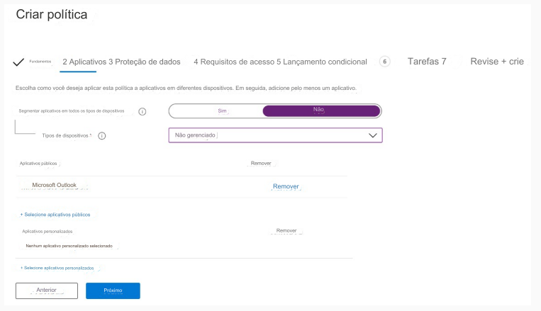

204- PONTO DE ACESSO
Você tem uma assinatura do Microsoft 365.
Os usuários têm dispositivos iOS que não estão inscritos no Microsoft Intune.
Você cria uma política de proteção de aplicativo para o aplicativo Microsoft Outlook, conforme mostrado na exposição. (Clique na
guia Exposição.)

Você precisa configurar a política para atender aos seguintes requisitos:
• Impedir que os usuários usem o aplicativo Outlook se a versão do sistema operacional for inferior a 12.0.0.
• Exigir que os usuários usem uma senha alfanumérica para acessar o aplicativo Outlook.
O que você deve configurar em uma política de proteção de aplicativos para cada requisito? Para responder, selecione
as opções apropriadas na área de resposta.
NOTA: Cada seleção correta vale um ponto.